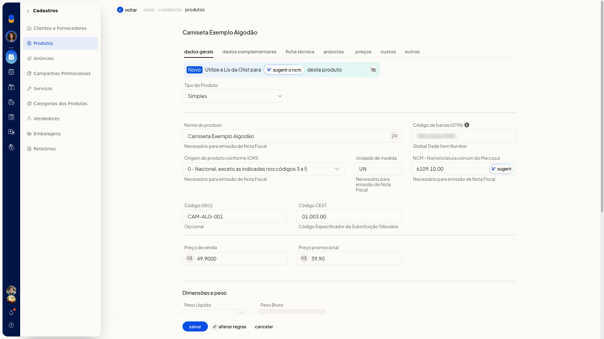
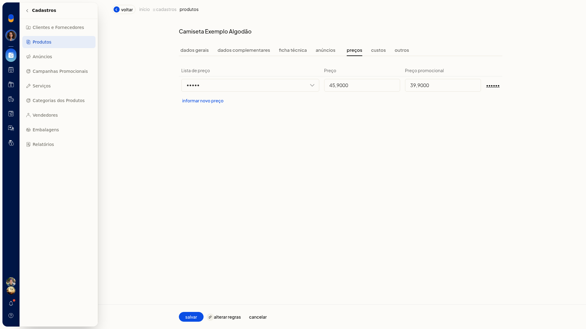

Produto: preços e custos
Na ficha do produto no ERP da Olist, você informa o preço de venda, o preço promocional, os valores de uma lista de preço e o lançamento de custo. Com isso, o item fica precificado e o custo fica registrado com data, saldos e preço de custo.
Os preços de venda também aparecem na aba Dados Gerais. A lista de preço fica na aba Preços e o lançamento de custo, na aba Custos.
Pré-requisitos
- Para lançar preço na aba Preços, a conta precisa ter ao menos uma lista de preço. O seletor mostra as listas já cadastradas.
- Se a opção não aparecer para você, peça acesso ao administrador da conta.
Importante
- Nenhum campo da ficha exibe asterisco.
- Com o produto ainda não salvo, Editar preços do anúncio não abre a edição. A tela informa que é necessário salvar o produto e oferece salvar produto e editar preços e cancelar.

Instruções
-
Acesse Cadastros > Produtos.
-
Clique em Incluir produto.
-
Em Dados Gerais, informe Preço de venda e, se quiser, Preço promocional. Use valores em R$.

-
Abra a aba Preços.
-
Selecione uma lista de preço já cadastrada.
-
Informe o preço e o preço promocional da lista. Para outro lançamento, use Informar novo preço e salve a linha.

-
Abra a aba Custos.
-
Informe A partir de (data em DD/MM/AAAA), Saldo atual, Saldo anterior, Impostos recuperáveis, Preço custo, Custo médio e Preço de venda. Para outro lançamento, use Informar novo preço de custo e salve a linha.
-
Clique em Salvar, na base da ficha, para gravar o produto com os preços e os custos informados.
Resultado
Antes de salvar, os valores digitados permanecem ao trocar de aba.
Informações adicionais
- Na aba Outros, o campo Markup recebe o índice de markup do produto.